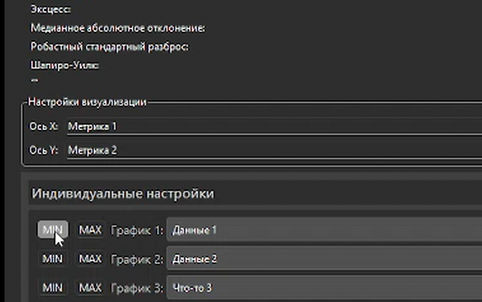
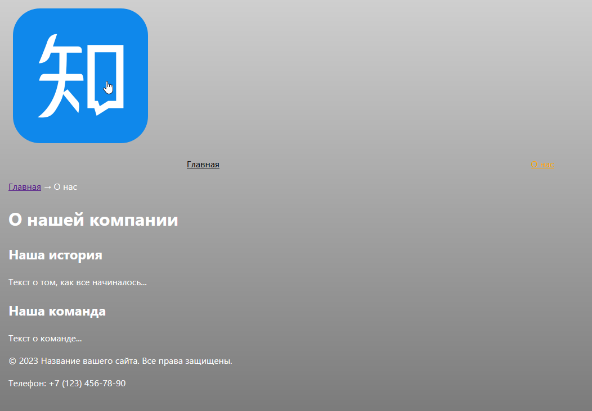

1 курс
Statistics Visualizer
Курсовая работа, написанная на C++ в конце первого курса. Минималистичное приложение для анализа данных при помощи графика и числовых метрик.
Ссылка

2 курс
my-awesome-project
Небольшой учебный сайт, сделанный в рамках "Фронтенд и Бекенд разработки" в сентябре.
Ссылка